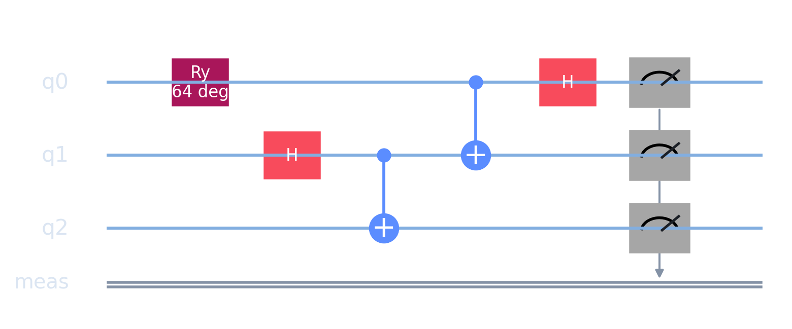
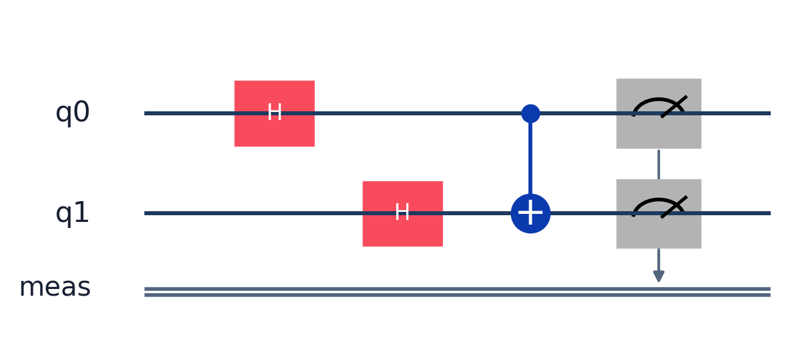
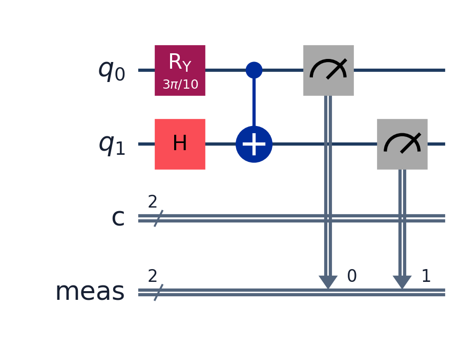
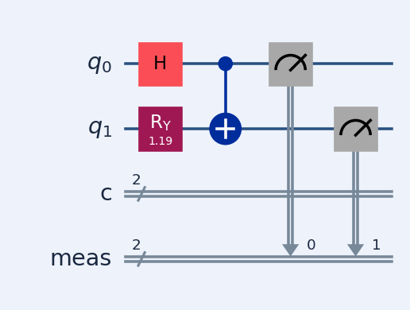
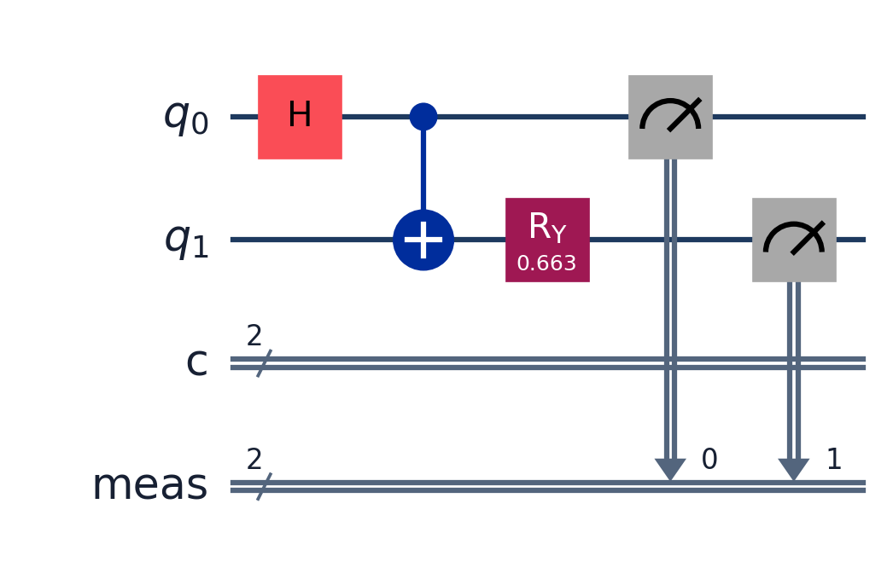

Tetris — randomness from quantum circuits
Standard Tetris rules. Every random outcome (piece, speed, bonus) is a measurement on a quantum circuit preset.
Stack. Bevy game engine (Rust) → WASM in the browser. Circuits are shared presets; desktop calls Qiskit Aer (Python), the browser runs BornBackend — built-in Rust statevector simulator, probabilities verified against Qiskit in CI. Qiskit does not run in a tab (Python); this is not RustQIP either, but a custom backend matched to the same gates.
The player: ← → ↑ ↓ and Space. The game: everything else.
In-game
Sets the active shape and the next preview.
Circuit
quantum-teleportation-gate-v1 ×2 — Bell pair → family (I, O, T…), message qubit → variant.

In-game
Sets spawn orientation and entry column.
Circuit
imp-brain-v1 — two measured bits mapped to rotation and column.

In-game
Interval between grid steps; decreases as level rises.
Circuit
enemy-profile-hunter-v1 — drop interval drawn on each new piece.

In-game
Instant lock; score bonus, sometimes one extra line.
Circuit
observation-pulse-v1 — deliberate measure, 2 bits → bonus type.

In-game
Score multiplier ×1 to ×4 from the draw.
Circuit
q-shard-stabilizer-v1 — post-clear stabilizer, bits → multiplier.
